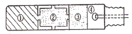
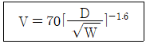
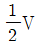
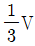
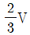
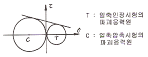
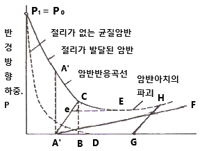
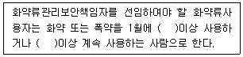

화약류관리산업기사 (2011-10-02 기출문제)
1과목: 일반화약학
1. Tetryl의 화학식으로 옳은 것은?
- (CH2NNO2)3
- C6H2(NO2)4NCH3
- C6H2(NO2)3CH3
- C10H6(NO2)2
(정답률: 알수없음)

2. 뇌홍(mercury fulminate)에 대한 설명 중 틀린 것은?
- 물에 녹지 않는다.
- 뇌홍의 분자식은 Hg(Onc)2 이다.
- 비중이 3:0 일 때 폭속이 약 4000m/s 이다.
- 국내에서 6호뇌관 기폭약으로 가장 많이 사용된다.
(정답률: 알수없음)
3. 폭약은 어떤 약경 이하에서는 폭굉을 일으키지 않는다. 이 때의 약경을 무엇이라 하는가?
- 폭발약경
- 한계약경
- 무연약경
- 폭연약경
(정답률: 알수없음)
4. 뇌관의 납판시험용으로 사용하는 납판의 두께는 몇 mm 인가?
- 2
- 3
- 4
- 5
(정답률: 알수없음)
5. 산소 공급제에 해당되지 않는 것은?
- 질산암모늄
- 질산칼륨
- 질산나트륨
- 암모니아
(정답률: 알수없음)
6. 기폭약에 해당하지 않는 것은?
- 뇌홍
- 질화납
- DDNP
- 염소산칼륨
(정답률: 알수없음)
7. 주된 사용 목적이 감열소염제인 것은?
- 질산바륨
- 질산암모늄
- 염소산칼륨
- 염화나트륨
(정답률: 알수없음)
8. 탄광 내에서 발파시 폭발의 원인이 되는 가스는?
- CO2
- O2
- CH4
- N2
(정답률: 알수없음)
9. 초안유제폭약(ANF0)의 제조 원료에 해당하는 것은?
- KNO3
- NH4NO3
- S
- KCIO3
(정답률: 알수없음)
10. 폭약의 성분이나 주변 조건에 따라 폭약이 폭발할 때 생성되는 유해가스가 아닌 것은?
- 일산화탄소
- 아황산가스
- 황화수소
- 질소가스
(정답률: 알수없음)
11. 젤라틴 다이너마이트를 탄동구포 시험한 결과 흔들림 각도가 16도였다.상대중량강도(RWS)로 옳은 것은? (단, 기준폭약인 블라스팅 다이너마이트의 흔들림 각도는 18도이다.)
- 79
- 85
- 90
- 95
(정답률: 알수없음)
12. 뇌관의 위력시험과 관계가 없는 것은?
- 납판시험
- 둔성폭약시험
- 못시험
- 내열시험
(정답률: 알수없음)
13. 감도시험의 종류가 아닌 것은?
- 순폭시험
- 카드갭시험
- 발화점시험
- 갱도시험
(정답률: 알수없음)
14. 화약류 용도에 의한 분류 중 파괴약이 아닌 것은?
- 발파약
- 작약
- 전폭약
- 발사약
(정답률: 알수없음)
15. 전기뇌관의 개략도이다. 해당 번호를 옳게 나타낸 것은?

- ① 점폭약, ② 첨장약, ③ 연시약, ④ 점화장치
- ① 첨장약, ② 점폭약, ③ 연시약, ④ 점화장치
- ① 점폭약, ② 연시약, ③ 첨장약, ④ 점화장치
- ① 첨장약, ② 연시약, ③ 점폭약, ④ 점화장치
(정답률: 알수없음)
16. TNT에 대한 설명으로 틀린 것은?
- 물에 잘 녹으므로 흡습성이 크다.
- 피크린산과 달리 금속과 접촉하여도 예민한 금속염류를 만들지 않는다.
- 85℃ 정도로 가열하면 액체상태로 존재한다.
- 충격감도는 피크린산보다 둔감하다.
(정답률: 알수없음)
17. 니트로화합물의 분자 구조를 나타낸 것은?
- O-NO2
- O-NO3
- C-NO2
- C-NO3
(정답률: 알수없음)
18. 한국산업표준(KS)에서 정한 도폭선의 폭발속도는?
- 500~700m/s
- 1000~1500m/s
- 2500~4000m/s
- 5500~7000m/s
(정답률: 알수없음)
19. 탄소 3g 이 산소 16g 중에서 완전연소 되었다면 연소 후 혼합기체의 부피는 표준상태에서 몇 L 인가?
- 22.4
- 19.8
- 11.2
- 5.6
(정답률: 알수없음)
20. 화약류에 관한 설명으로 옳은 것은?
- 무연화약은 니트로화합물이다.
- 카알릿은 과염소산염을 주로 하는 폭약이다.
- TNT는 질산에스테르 화합물이다.
- 아지화납은 니트로화합물이다.
(정답률: 알수없음)
2과목: 발파공학
21. 계단발파에 의한 폭풍압(air blast)을 감소시키는 방법 중 옳지 않은 것은?
- 정기폭을 사용한다.
- 계단의 높이를 낮춘다.
- 도폭선 사용을 피한다.
- MS 전기뇌관으로 단발씩 발파한다.
(정답률: 알수없음)
22. 다음 중 스므스 블라스팅(smooth blasting)에 대한 설명으로 옳지 않은 것은?
- 효과적인 발파를 위해서 공경보다 직경이 작은 정밀폭약을 이용한다.
- 스므스 발파공은 가능한 한 동시 기폭시키는것이 좋다.
- 스므스 발파공의 간격은 최소저항선보다 작게 한다.
- 층리, 절리 등 불염속면이 발달한 암반일수록 스므스블라스팅의 효과가 크다.
(정답률: 알수없음)
23. 다음 중 미진동 파쇄기에 의한 발파 방법의 설명으로 옳지 않은 것은?
- 천공은 약통경에 맞추어서 32~34mm 가 좋다.
- 미진동 파쇄기는 가스압에 의해 파괴체계를 파쇄하기때문에 전색물이 가장 중요하다.
- 전색물은 바로 굳지 않으므로 여름철에는 전색 후 30분 이상의 대기시간이 필요하다.
- 전색재료로는 포틀랜트 시멘트, 건조된모래, 시멘트급 결재의 비중비를 2:1:1의 비율로 혼합한다.
(정답률: 알수없음)
24. 다음 중 전기발파의 병렬결선에 대한 설명으로 옳지 않은 것은?
- 전원에 전등선, 동력선을 이용할 수 있다.
- 전기뇌관의 저항이 조금씩 다르더라도 상관 없다.
- 결선이나 뇌관에 불량한 것이 있으면 그것만 불발되어 불발시 조사가 쉽다.
- 가스나 탄진의 위험이 있는 곳에서는 사용할 수없다.
(정답률: 알수없음)
25. 다음 중 발파진동에 관한 설명으로 옳은 것은?
- 측정거리가 길어지면 저주파 성분은 감소되고 고주파 성분만이 계측된다.
- 발파진동에 의한 지반운동은 일반적으로 변위, 입자속도, 감속도로 나타낼 수 있다.
- 지상 구조물에 대한 영향을 평가할 때 직접적인관련을 갖는 것은 진동속도이다.
- 지반진동에 의해 지반 중의 입자가 움직이는 진폭을 폭풍압이라 한다.
(정답률: 알수없음)
26. 다음 중 발파작업에 있어서, 일반적인 천공발파의 순서로 옳은 것은?
- 천공-전색-장전-대피-경계-발파-확인
- 천공-장전-전색-대피-경계-발파-확인
- 천공-장전-대피-전색-경계-발파-확인
- 천공-장전-전색-경계-대피-발파-확인
(정답률: 알수없음)
27. 다음 진동예상식에서 거리를 2배로 증가시켰을 때진동속도는 얼마나 감소하겠는가?




- V
(정답률: 알수없음)
28. 다음 중 Lilly의 발파지수(Blasting Index, BI)를 구성하는 요소가 아닌 것은?
- 암반강도
- 암반형태
- 절리간격
- 절리방향
(정답률: 알수없음)
29. 구멍 지름 38mm 의 발파공을 공간격 10cm로 하고, 장약장은 천공경의 12배로 하여 3공을 집중발파하였을 때 저항선의 비는 얼마인가?
- 1.52
- 1.72
- 1.92
- 2.12
(정답률: 알수없음)
30. 발파해체공법 중 선형적 붕괴 진행을 유도함으로써 아파트와 같이 길이가 긴 건축구조물의 해체에 가장 적합한 공법은?
- 단축붕괴공법
- 내파공법
- 점진붕괴공법
- 연속붕괴공법
(정답률: 알수없음)
31. 벤치발파시 열과 열 사이의 지연시차에 대해 더 큰 발파 결과에 대한 설명으로 옳은 것은?
- 지연시차가 짧을수록 자유면에 대해 더 큰 암괴를 발생시킨다.
- 지연시차가 짧을수록 여굴량이 감소한다.
- 지연시차가 길수록 발파진동과 폭풍압이 크게 발생할 수 있다.
- 지연시차가 길수록 하부가 발파되지 않을 수 있다.
(정답률: 알수없음)
32. 작은 파쇄입도를 얻기 위한 발파 방법으로 옳지 않은 것은?
- 비장약량을 증가시킨다.
- 보조 천공을 실시한다.
- 1회당 1열씩 발파한다.
- 암질에 타당한 폭약을 선택한다.
(정답률: 알수없음)
33. 계단높이 10m, 계단의 폭 20m, 상대암석계수 0.3kg/m3인 암반에 천공경을 75mm로 수직 하향 천 공하고 다이나마이트를 사용하여 지발발파를 설계할 때 발파공 기저부분의 최대저항선(Bmax)은 얼마인가? (단, 다이나마이트의 장전밀도는 1.25kg/ℓ이다.)
- 2.97m
- 3.77m
- 4.97m
- 5.97m
(정답률: 알수없음)
34. 2kg의 장약량으로 시험발파를 실시한 결과, 누드지수가 0.9로 나타났다. 표준장약량은 얼마인가? (단, Dambrun식을 사용)
- 1.22kg
- 2.44kg
- 3.66kg
- 4.88kg
(정답률: 알수없음)
35. 발파공의 장약 후 전색물을 이용하여 전색을 실시하게 되는데, 다음 중 전색물의 조건으로 적합하지 않은 것은?
- 압축률이 작지 않을 것
- 발파공벽과의 마찰이 작을 것
- 발파공을 쉽게 빨리 메울 수 있는 것
- 재료의 구입과 운반이 쉽고 값이 싼 것
(정답률: 알수없음)
36. 심빼기 번컷(Burn-cut)에서 무장약공경 10cm, 장약 공경 3.3cm일 때 장약공의 단위길이당 장약량은? (단, Langefors식을 이용하고, 무장약공과 장약공의 중심간 거리는 150mm 이다.)
- 2.61kg/m
- 1.21kg/m
- 0.76kg/m
- 0.28kg/m
(정답률: 알수없음)
37. 발파에 의해 발생하는 파(Wave) 중 암석이 토양속을 진행하는 물체파로 파의 진행방향과 같은 방향으로입자운동하는 파는?
- P파(Primary Wave)
- S파(Secondary Wave)
- R파(Rayleigh Wave)
- L파(Love Wave)
(정답률: 알수없음)
38. 다음 중 수중발파를 위한 발파설계로 옳은 것은? (단, Gustafsson 의 제안방법임)
- 경사공의 경우는 비장약량을 1.0kg/m3로 하나, 수직공의 경우는 파쇄가능성을 높게 하기 위해서비장약량을 30%증가한 1.3kg/m3로 한다.
- 수압을 보정하기 위해서 수심 m당 0.⑤kg/m3의비장약량을 증가시킨다.
- 진흙으로 암반이 덮혀있는 경우, 진흙층의 두께 m당 0.01kg/m3의 비장약량을 증가시킨다.
- 암석층을 보정하기 위해서 계단높이 m당 0.03kg/m3의 비장약량을 증가시킨다.
(정답률: 알수없음)
39. 다음 중 인장파괴이론에 대한 설명으로 옳지 않은것은?
- 충격파의 파장이 짧을수록 구꺼운 판상으로 파괴된다.
- 충격파의 강도가 암석의 인잔강도보다 클수록 많은수의 판상으로 파괴된다.
- 폭약의 폭굉압은 10만기압 이상으로 추정되나 이것은 폭약의 종류, 장전밀도, 폭속에 따라 달라진다.
- 인장파괴이론은 홉킨슨 효과(Hopkinson effect)로설명이 가능하다.
(정답률: 알수없음)
40. 다음 중 발파작업에서 많은 공을 동시에 발파하는공법은?
- 제발발파
- 지발발파
- 단발발파
- ms발파
(정답률: 알수없음)
3과목: 암석역학
41. 다음 중 최대 전단응력과 최대 수직응력이 이루는각도는?
- 0°
- 30°
- 45°
- 90°
(정답률: 알수없음)
42. 암석의 일축압축시험을 실시하는 경우 준수하여야 할 유의사항으로 옳지 않은 것은? (단, 국제암반역학회 (ISRM, 1981)의 제안 사항임)
- 가능하면 시험편은 완전 건조상태를 유지하도록한다.
- NX 이상의 원주형 시험편을 사용하고, 시험편의직경은 암석에 존재하는 가장 큰 입자보다 10배이상 커야 한다.
- 직경(D)에 대한 높이(H)의 비(H/D)는 2.5~3.0으로 한다.
- 재하 속도는 0.5~1.0MPa/s가 되도록 한다.
(정답률: 알수없음)
43. 원형 터널 주위에 정수압 P가 작용할 때 터널 측벽과 천반에서 접선방향의 응력은 각각 얼마인가? (단, 터널 주위의 암반은 등방탄성체로 가정)
- 터널 측벽 : P, 터널 천반 : P
- 터널 측벽 : P, 터널 천반 : 2P
- 터널 측벽 : 2P, 터널 천반 : P
- 터널 측벽 : 2P, 터널 천반 : 2P
(정답률: 알수없음)
44. 다음 중 암석의 일축압축시험에서 체적팽창현상이 일어나는 원인으로 옳은 것은?
- 시간의존성이 두드러지기 때문이다.
- 공극이 압착되는 현상 때문이다.
- 미세균열의 발생이 활성화되기 때문이다.
- 포아송비가 낮아지기 때문이다.
(정답률: 알수없음)
45. 응력-축변형률 곡선에서 영률을 계산하는 방법 중원점에서부터 일축압축강도의 50% 응력 수준까지 직 선을 그어 전체 기울기로 영률을 결정하는 것은?
- 평균영률
- 고정영률
- 접선영률
- 할선영률
(정답률: 알수없음)
46. 다음 중 중간 주응력을 고려한 암석파괴이론은?
- Mour-Coulomb 이론
- Griffith 이론
- Tresca 이론
- Nadai 이론
(정답률: 알수없음)
47. 원유를 암반 내 지하공동에 저장하는데 있어 활용이 기대되는 지하특성이 아닌 것은?
- 단열성
- 차광성
- 격리성
- 차음성
(정답률: 알수없음)
48. 지반의 동적 거동을 표현하는 자유도 모델의 기본이 되면, 점탄성 특성을 나타내는 복합체는?
- Hooke 모델
- Dashpot 모델
- Kelvin 모델
- St. Venant 모델
(정답률: 알수없음)
49. 다음 그림은 일축압축강도 및 일축압축강도를 모어 (Mour)의 응력원으로 표시한 것이다. 이 모어의 응력원에 의하여 구할 수 있는 것은?

- 삼축압축강도
- 굴곡강도
- 전단강도
- 암석의 탄성계수
(정답률: 알수없음)
50. 다음 중 절리면 직접전단시험을 통해 얻을 수 있는 자료가 아닌 것은?
- 전단강성
- 점착강도
- 잔류마찰각
- 포아송비
(정답률: 알수없음)
51. 평사투영법을 사용하여 암반사면의 안정성을 해석하는 경우 필요한 입력자료로 알맞은 것은?
- 불연속면의 간격 (spacing)
- 불연속면의 방향성 (orientation)
- 불연속면의 간극 (aperture)
- 불연속면의 연속성 (persistence)
(정답률: 알수없음)
52. 암반분류법인 RMR분류에서 불연속면 방향에 대한점수 보정시 아부 불리(Very Unfavourable)할 경우가장 점수를 많이 보정해 주어야 하는 순서대로 나열된 것은? (단, 보정을 많이 하는 순에서 적은 순으로)
- 터널-기초-사면
- 터널-사면-기초
- 사면-터널-기초
- 사면-기초-터널
(정답률: 알수없음)
53. 터널 굴착시 발생하는 일반적인 현상이 아닌 것은?
- 터널주변부에 응력집중 발생
- 굴착으로 인한 원지반 교란
- 터널주변부에 인장크랙 발생
- 지표면 융기
(정답률: 알수없음)
54. 다음 중 암석의 취성도에 대한 설명으로 옳은 것은?
- 영구변형률이 클수록 취성도가 높다.
- 동일응력 하에서 파괴점가지의 변형률이 클수록취성도가 높다.
- 삼축압축시험 시 봉압이 증가할 때 최대응력의 증가율이 클수록 취성도가 높다.
- 일축압축강도와 인장강도의 비가 작을수록 취성도가 높다.
(정답률: 알수없음)
55. 다음 그림은 Deere 등(1970)에 의해 제안된 암반반 응곡선이다. 여기서 지하구조물의 계측에 따라 가장 적절히 설계된 지보를 나타내는 것은 무엇인가?

- A-A'
- A-C
- A-F
- G-H
(정답률: 알수없음)
56. 일정한 크기의 하중을 계속적으로 시험편에 가하는 경우, 하중의 크기에 해당되는 탄성 변형률이 순간적으로 발생한 후 계속적으로 변형률이 증가하는 현상은?
- 크리프
- 피로
- 변형률 경화
- 변형률 연화
(정답률: 알수없음)
57. 지하수상태는 완전 건조, 절리 방향에 대해 매우 유리한 조건 하의 암반에 대한 RMR89을 산정한 결과, 그 값은 45점이었다. 이 암반에 대한 지질강도지수(GSI)값은?
- 40
- 45
- 50
- 55
(정답률: 알수없음)
58. 록 볼트의 적정 시공 여부를 검사하기 위한 시험은?
- 반발경도시험
- 인발시험
- 잭 시험
- 관입시험
(정답률: 알수없음)
59. 풍화작용에 대한 암석의 저항성을 측정하는 시험 중 물에 대한 내구성을 나타내는 시험은 무엇인가?
- 스웰링 시험
- Lugeon 시험
- 슬레이크 시험
- 수압파쇄 시험
(정답률: 알수없음)
60. 어떤 암석에 대한 탄성파속도 시험결과 Vp = 5000m/sec, Vs = 2700m/sec로 측정되었다. 이 암석의 포아송비는 얼마인가? (단, 암석의 밀도는 2.7g/cm3 이다.)
- 0.15
- 0.22
- 0.29
- 0.33
(정답률: 알수없음)
4과목: 화약류 안전관리 관계 법규
61. 다음 중 화약류저장소 주위에 간이흙둑을 설치할 때의 기준으로 옳지 않은 것은?
- 간이흙둑의 경사는 75도 이하로 설치한다.
- 간이흙둑의 높이는 3급저장소에 있어서는 처마의높이 이상으로 한다.
- 정상의 폭은 60cm이상으로 한다.
- 정상은 빗물이 스며들지 아니하도록 판자 등으로씌우거나 잔디를 입혀야 한다.
(정답률: 알수없음)
62. 지상 1급 저장소의 창은 저장소의 기초로부터 얼마 이상의 높이로 설치하여야 하는가? (단, 법령상 기준임)
- 1.5m
- 1.7m
- 2.0m
- 2.5m
(정답률: 알수없음)
63. 지하 1급 저장소에 폭약 20톤을 저장하고자 할 때지반의 두께기준으로 옳은 것은?
- 24m 이상
- 21.5m 이상
- 20.5m 이상
- 20m 이상
(정답률: 알수없음)
64. 다음 ( )안에 순서대로 들어갈 내용으로 옳은 것은?

- 50kg, 6월
- 50kg, 1년
- 100kg, 6월
- 100kg, 1년
(정답률: 알수없음)
65. 피보호건물로부터 독립하여 피뢰침 및 가공지선을설치하는 경우, 피뢰침 및 가공지선의 각 부분은 피보호건물로부터 얼마 이상의 거리를 두어야 하는가?
- 3m 이상
- 2.5m 이상
- 2m 이상
- 1.5m 이상
(정답률: 알수없음)
66. 화약류의 판매업을 허가를 받지 아니하고 영위하였다면 어떤 처벌을 받는가?
- 1년 이하의 징역 또는 500만원 이하의 벌금
- 3년 이하의 징역 또는 700만원 이하의 벌금
- 5년 이하의 징역 또는 1000만원 이하의 벌금
- 10년 이하의 징역 또는 2000만원 이하의 벌금
(정답률: 알수없음)
67. 화약류관리보안책임자 면허를 받은 사람은 그 면허를 받은 날로부터 몇 면 년마다 갱신하여야 하는가?
- 3년
- 5년
- 7년
- 10년
(정답률: 알수없음)
68. 화약류의 운반방법의 기술상의 기준으로 옳지 않은 것은?
- 화약류의 운반은 자동차(2륜 자동차 및 택시 제외)에 의하여야 하며, 200km 이상의 거리를 운반하는 때에는 예비운전자를 1명 이상 태울 것
- 화약류를 실은 차량이 서로 진행하는 때(앞지르는경우 제외)에는 100m 이상 거리를 둘 것
- 야간에 주차하고자 하는 때에는 차량의 전방과 후방 30m 지점에 적색등불을 달 것
- 화약류를 다룰 때에는 갈고리 등을 사용하지 아니할 것
(정답률: 알수없음)
69. 사용허가를 받지 아니하고 화약류를 사용할 수 있는 수량으로서 건축, 토목공사용으로 1일 동일한 장소에서 사용할 수 있는 수량은?
- 산업용 실탄 150개 이하
- 미진동파쇄기 200개 이하
- 광쇄기 30개 이하
- 폭발천공기 50개 이하
(정답률: 알수없음)
70. 다음 중 화약류 안정도 시험방법에 해당되지 않는것은?
- 유리산시험
- 내열시험
- 가열시험
- 충격시험
(정답률: 알수없음)
71. 화약류 취급소에 대한 설명으로 옳지 않은 것은?
- 약포에 전기뇌관을 끼우거나 기원진 약포를 취급하는 작업에 전용되는 건물이다.
- 단층 건물로서 철근콘크리트조, 콘크리트조, 콘크리트블럭조 도는 이와 동등 이상의 견고한 재료를사용하여 설치하여야 한다.
- 지붕은 슬레이트, 기와 등 불에 타지 않는 재료를사용하여야 한다.
- 난방장치를 하는 때에는 온수, 증기 또는 열기를 이용하는 것만을 사용하여야 한다.
(정답률: 알수없음)
72. 재해의 예방상 필요하다고 인정되는 때에 화약류의 소유자에게 안정도시험을 실시하도록 명령할 수 있는 사람은?
- 경찰서장
- 경찰청장
- 행정안전부장관
- 시.도지사
(정답률: 알수없음)
73. 꽃불류 사용의 기술상의 기준으로 옳지 않은 것은?
- 풍속이 초당 5미터 이상일 때에는 꽃불류의 사용을중지할 것
- 사용준비가 끝난 쏘아 올리는 꽃불류로부터 20미터이내의 장소에서는 다른 쏘아 올리는 꽃불류를 사용하지 아니할 것
- 꽃불류를 발사통 안에 넣는 때에는 끈 등을 사용하여 서서히 넣을 것
- 불발된 꽃불류가 있는 때에는 지체없이 이를 회수하여 물에 넣는 등 적절한 안전조치를 할 것
(정답률: 알수없음)
74. 다음 중 전기발파의 기술상의 기준에 대한 설명으로 옳지 않은 것은?
- 발파모선은 고무 등으로 절연된 전선 30미터 이상의것을 사용하되, 사용 전에 그 선이 끊어졌는지의여부를 검사 할 것
- 공기 장전기를 사용하여 화약 또는 폭약을 장전하는 때에는 전기뇌관을 사용하지 말고 공업용뇌관을 사용할 것
- 동력선 또는 전등선을 전원으로 하는 때에는 전선에1암페어 이상의 적당한 전류가 흐르도록 할 것
- 전선은 점화하기 전에 화약류를 장전한 장소로부터 30미터 이상 떨어진 안전한 장소에서 도통시험 및 저항시험을 할 것
(정답률: 알수없음)
75. 다음 중 운반표지를 하지 않고 운반할 수 있는 화약류의 수량으로 옳지 않은 것은?
- 10kg 이하
- 10만개 이하의 총용뇌관
- 1천개 이하의 미진동파쇄기
- 1천개 이하의 실탄. 공포탄
(정답률: 알수없음)
76. 저장중인 다이나마이트에서 미트로글리세린이 스며 나와 마루바닥을 오염시킨 경우 니트로글리세린을 분해 하기 위해 제조하는 액체의 성분으로 옳은 것은?
- 물150mL + 설탕 100g + 알콜 1L
- 물150mL + 가성소다 100g + 순수글리세린 1L
- 물150mL + 가성소다 100g + 알콜 1L
- 물150mL + 설탕 100g + 순수글리세린 1L
(정답률: 알수없음)
77. 다음 중 경찰서장의 설치 허가를 받아야 하는 화약류 저장소는?
- 3급저장소
- 실탄저장소
- 도화선저장소
- 꽃불류저장소
(정답률: 알수없음)
78. 화약류판매업자가 판매할 목적으로 화약류 양수 허가를 받지 아니한 사람에게 제품을 양도했을 경우의 행정 처분기준은? (단, 위반회수는 2회)
- 1월 효력정지
- 3월 효력정지
- 6월 효력정지
- 허가 취소
(정답률: 알수없음)
79. 다음 중 허가 없이 화약류를 소지할 수 있는 경우에 해당 하지 않는 것은?
- 화약류의 수입허기를 받은 사람이 그 화약류를 소지하는 경우
- 화약류의 양수허가를 받은 사람이 그 화약류를 소지하는 경우
- 학교에서 물리. 화학상의 실험을 위해 허가 없이폭약 500그램을 제조하여 소지하는 경우
- 화약류의 사용허가를 받은 사람의 종업원이 그 직무상 화약류를 소지하는 경우
(정답률: 알수없음)
80. 2급 저장소의 화약류별 최대저장량으로 옳은 것은?
- 폭약 : 20톤
- 도폭선 : 1500km
- 총용뇌관 : 10만개
- 미진동파쇄기 : 100만개
(정답률: 알수없음)
Tetryl은 2,4,6-트리니트로톨루엔(TNT)과 달리 직접적인 폭발성이 없는 안정적인 화합물입니다. 그 화학식은 C6H2(NO2)3CH3이 아니라 C6H2(NO2)4NCH3입니다. 이유는 Tetryl의 분자 구조에서 4개의 NO2기가 붙어있기 때문입니다.